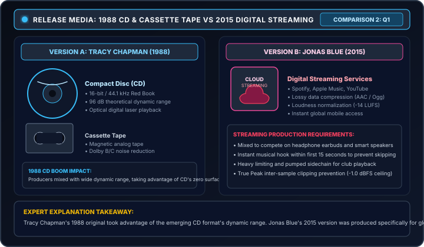
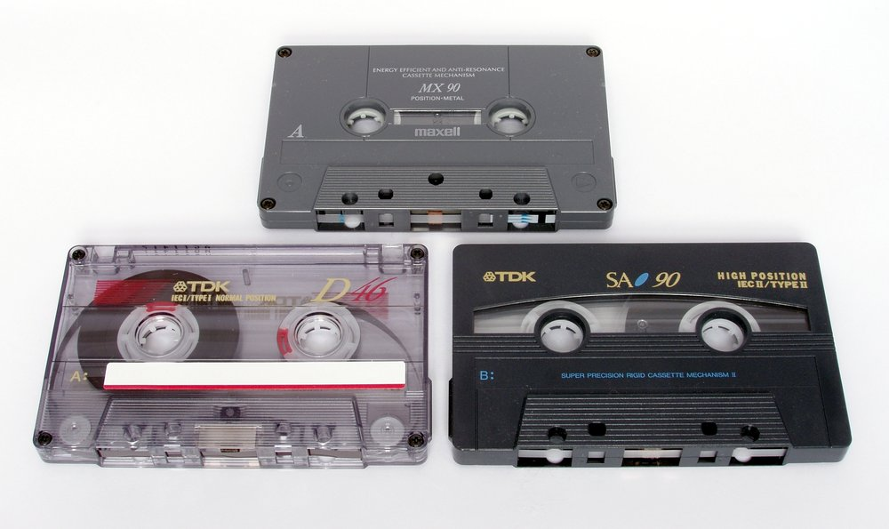
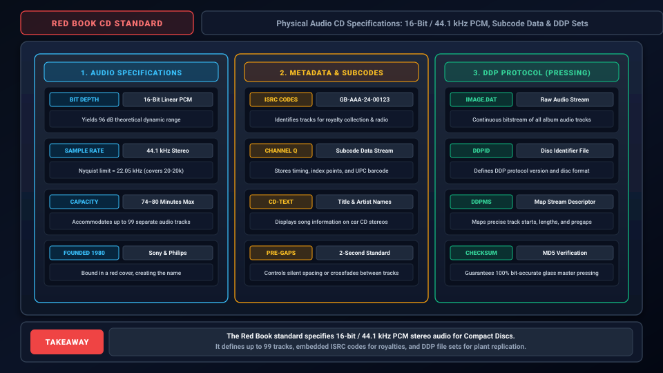
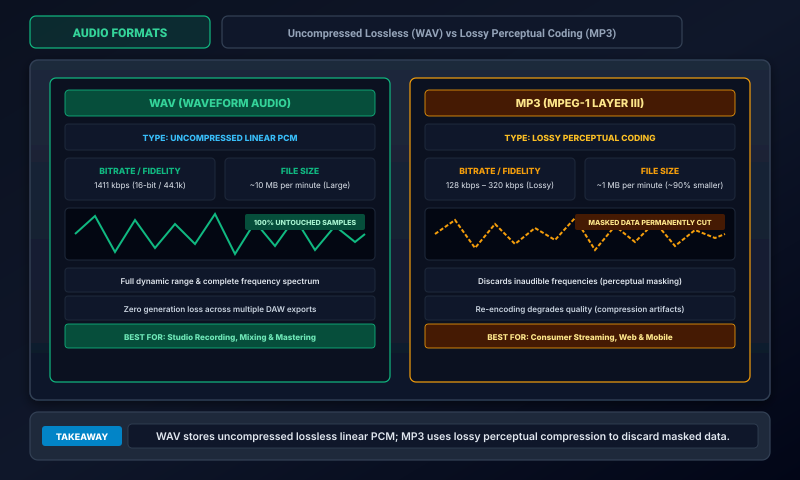

Click outside or press ESC to close
Edexcel Component 3 focuses on the commercial formats that brought music into homes and headphones: Vinyl Microgroove (1948), Compact Cassette (1963), Compact Disc (1982), and MP3 / Streaming (1993–Present).

Commercial formats transformed the recording industry by balancing three critical engineering trade-offs: Frequency Response (20 Hz - 20 kHz), Dynamic Range (signal-to-noise ratio in decibels), and Consumer Portability (from heavy 12-inch discs to infinite cloud streams).
Each format represents a unique physical transduction principle: mechanical diamond stylus tracing PVC grooves, magnetic induction across tape heads, laser beam phase cancellation over optical pits, and algorithmic mathematical data compression.
Introduced by Columbia Records in 1948, vinyl microgroove records pressed on smooth polyvinyl chloride (PVC) unlocked up to 22 minutes per side with wide frequency response, made possible by the RIAA pre-emphasis/de-emphasis curve.
Standard shellac grooves were thick and noisy. Vinyl used synthetic polyvinyl chloride (PVC), which was flexible and smooth. By reducing groove width to 1 mil (microgroove), playback speed dropped to 33⅓ RPM, extending playing time to 22 minutes per side.
Stereo vinyl (1958) used Alan Blumlein's 45/45 degree groove system: the inner wall modulates at 45° for the Left channel, and the outer wall modulates at 45° for the Right channel. A mono stylus sums both walls laterally.
Invented by Lou Ottens at Philips in 1963, the cassette democratised music. Running at 1⅞ ips on a 0.15" ribbon with Type II Chrome tape and Dolby B noise reduction, it created mixtape culture and the 1979 Sony Walkman portable boom.

Philips made the brilliant strategic decision to license the cassette patent royalty-free in 1965, defeating proprietary formats. In 1979, Sony's Walkman TPS-L2 turned music into a personal, mobile soundtrack for the first time in history.
Cassette engineering conquered severe physics constraints: tape running at only 1⅞ ips (one-eighth the speed of studio 15 ips tape) through tiny record heads required advanced magnetic chemistry and active compander noise reduction.
Co-developed by Sony and Philips in 1980 and released commercially in 1982, the CD replaced mechanical styluses with a semiconductor laser reading binary pits beneath clear polycarbonate, delivering 96 dB of silent dynamic range.

In 1980, Sony (Norio Ohga) and Philips (Kees Schouhamer Immink) established the 'Red Book' standard. They decided on 16-bit linear PCM resolution and a 44.1 kHz sampling rate, enabling a 120 mm disc to hold up to 74 minutes of music.
Brothers in Arms by Dire Straits (1985) was recorded on a 24-track Sony PCM-3324 digital tape recorder (DDD: Digital recording, Digital mixing, Digital mastering) and became the first CD to sell over 1 million copies.
MP3 (1993) shrunk CD files by 90% using psychoacoustic masking to discard sounds human ears cannot perceive. Today, platforms like Spotify and Apple Music stream AAC and Ogg Vorbis while enforcing LUFS loudness normalisation.

Uncompressed CD audio requires ~10 MB of data per minute (1,411 kbps). The Fraunhofer Society engineered MP3 using human hearing biology: if the brain can't hear a sound, don't store it! Today, Spotify (Ogg Vorbis 320k) and Apple Music (AAC 256k / ALAC Lossless) dominate global listening.
Streaming platforms also ended the 'Loudness Wars' by applying ITU-R BS.1770 / EBU R128 loudness normalisation (Spotify -14 LUFS, Apple -16 LUFS), penalising over-compressed squashed masters by turning them down automatically.
The complete Edexcel Component 3 comparative reference for the 4 syllabus formats: physical mediums, frequency bandwidths, dynamic ranges, and signature exam pitfalls.
When answering questions on storage formats, always use technical terminology: 'Polyvinyl chloride', 'RIAA pre-emphasis/de-emphasis', 'Semiconductor laser photodiode phase cancellation', 'Type II Chromium dioxide', 'Psychoacoustic frequency and temporal masking', and 'ITU-R BS.1770 LUFS normalisation'.
Examiners frequently test your ability to explain WHY a technology was developed: e.g., why vinyl replaced shellac (longer playing time, quieter surface, lighter tracking), why RIAA was necessary (preventing physical groove overlap), or why MP3 compression was created (internet bandwidth limitations).
| Format | Transduction Method | Bandwidth | Dynamic Range | Key Flaws & Exam Clues |
|---|---|---|---|---|
| Vinyl Disc (33⅓ & 45) | Mechanical diamond stylus / PVC / RIAA phono pre-emphasis & de-emphasis | 20 Hz – 20,000 Hz |
~55–65 dB |
RIAA EQ curve needed, inner-groove distortion, wow & flutter, dust clicks, physical stylus wear. |
| Compact Cassette | Magnetic induction / 0.15" tape at 1⅞ ips / Type I/II/IV / Dolby B/C NR | 30 Hz – 16,000 Hz (Type II) |
~50–65 dB (w/ Dolby) |
High tape hiss without Dolby B/C, head azimuth misalignment muffles treble, wow & flutter. |
| Compact Disc (CD) | Optical 780 nm infrared laser / reflective pits & lands / 16-bit 44.1 kHz PCM | 20 Hz – 20,000 Hz (flat) |
~96 dB (16-bit) |
Red Book standard; zero surface noise or wow/flutter, CIRC error correction for scratches. |
| MP3 & Streaming | Perceptual psychoacoustic coding / MDCT / LUFS loudness normalisation | 20 Hz – 16 kHz (128k) / 20k (320k) |
Up to 96 dB (perceived) |
Auditory masking, metallic cymbal swishing, pre-echo transients, squashed masters turned down by LUFS. |